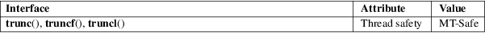

trunc, truncf, truncl − round to integer, toward zero
Math library (libm, −lm)
#include <math.h>
double
trunc(double x);
float truncf(float x);
long double truncl(long double x);
Feature Test Macro Requirements for glibc (see feature_test_macros(7)):
trunc(),
truncf(), truncl():
_ISOC99_SOURCE || _POSIX_C_SOURCE >= 200112L
These functions round x to the nearest integer value that is not larger in magnitude than x.
These functions return the rounded integer value, in floating format.
If x is integral, infinite, or NaN, x itself is returned.
No errors occur.
For an explanation of the terms used in this section, see attributes(7).

C11, POSIX.1-2008.
glibc 2.1. C99, POSIX.1-2001.
The integral value returned by these functions may be too large to store in an integer type (int, long, etc.). To avoid an overflow, which will produce undefined results, an application should perform a range check on the returned value before assigning it to an integer type.
ceil(3), floor(3), lrint(3), nearbyint(3), rint(3), round(3)